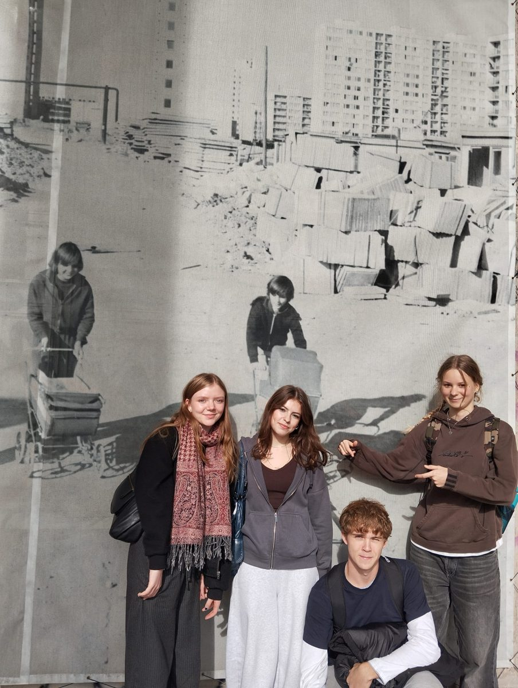
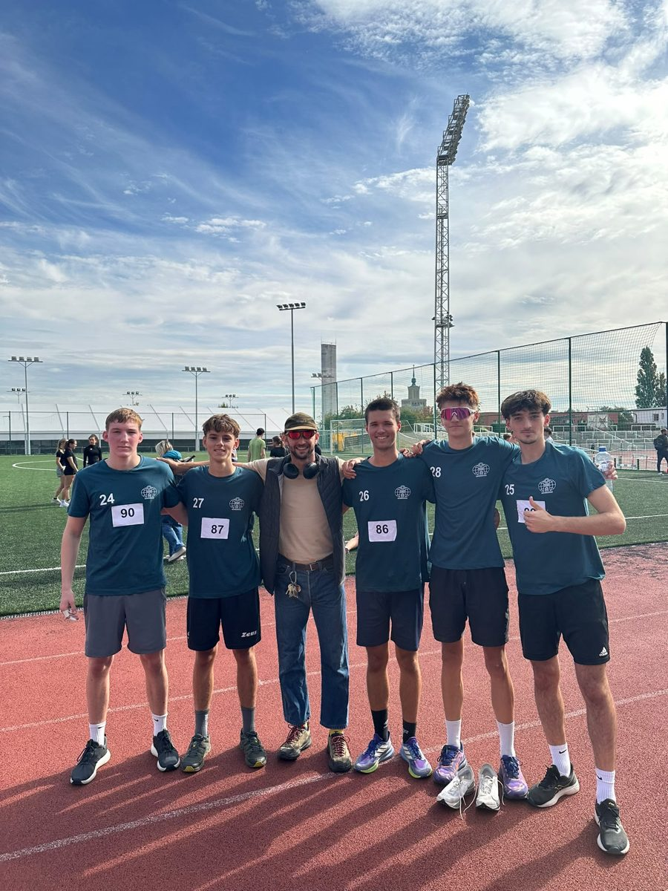
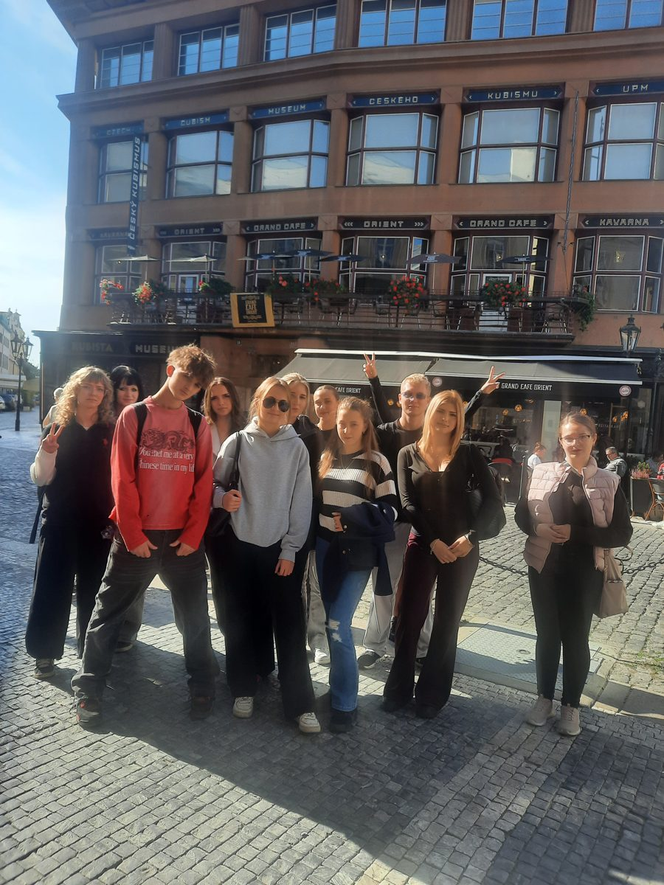
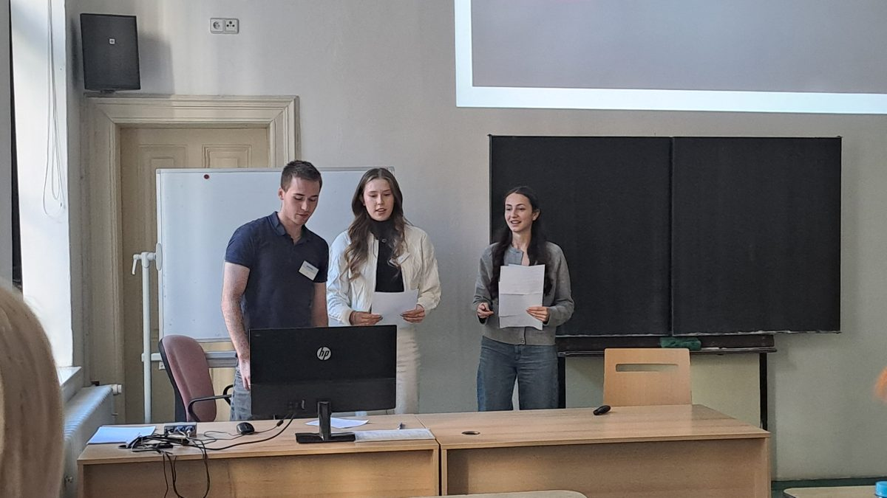
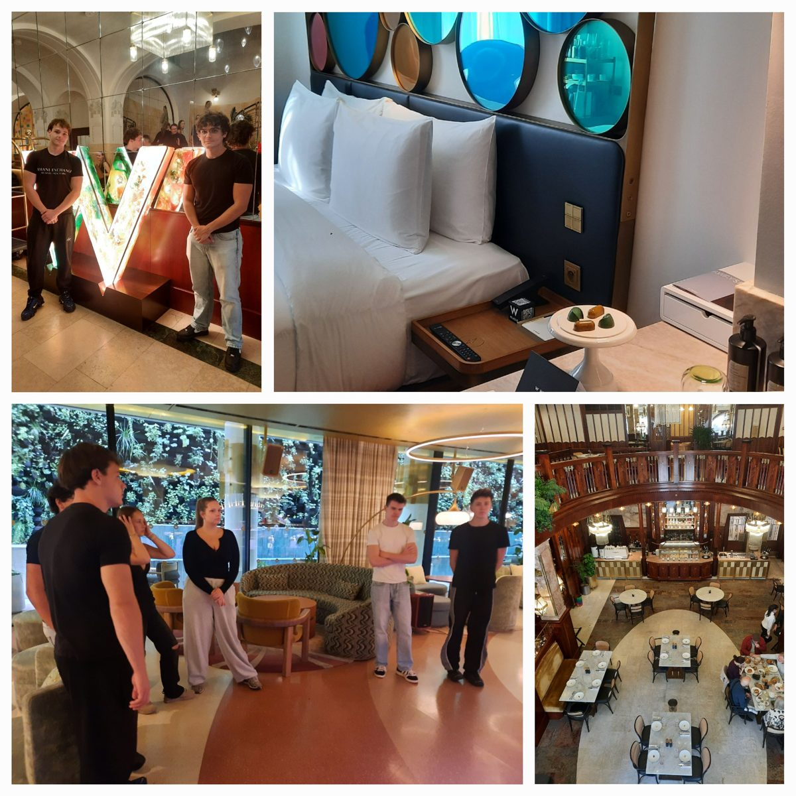
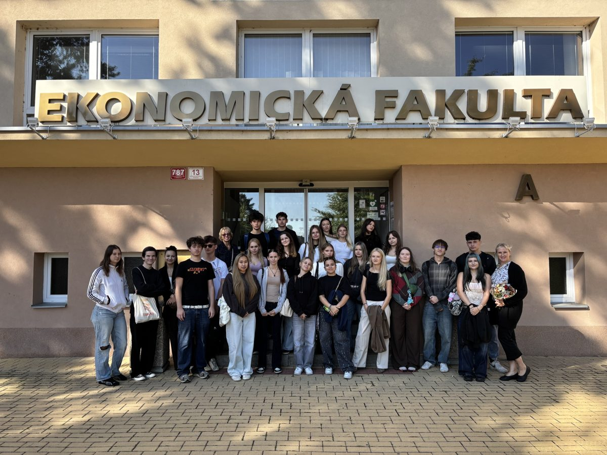

Obchodní akademie Hovorčovická
Váš partner, vaše jistota.
Aktuality
Všechny →
Společenskovědní seminář Žáci třetích ročníků navštívili Strahovský stadion, největší stavbu svého druhu na světě. Součástí prohlídky byla odbojovka, hra o životech hrdinů v totalitních režimech.
Poprask a závod v přespolním běhu Fotbalový turnaj na Pražačce a běh na 3,5 km na Julisce. Ondřej Štěrba doběhl šestý ze 168 závodníků.
Průvodcovský seminář III. Třídy 3.A a 3.B vyrazily do ulic Starého Města. Fotka vznikla před kubistickým domem U Černé Matky Boží.
Ekonomický tým 2026 Tým ze 4.E skončil v krajském kole mezi jedenácti týmy sedmý.
Exkurze v Grandhotelu Evropa Třída 4.C1 v rámci Hotelového provozu navštívila pětihvězdičkový hotel na Václavském náměstí.
Den vysokoškolákem nanečisto Žáci 4.B strávili den na Jihočeské univerzitě. Prohlédli si kampus, knihovnu a absolvovali dva workshopy.Často hledané
BakalářiZnámky, rozvrh, omluvenky→
ZvoněníPřestávky a rozvrh dne→
Harmonogram 2026/27Termíny školního roku→
MaturitaTermíny a podmínky→
Plán akcíUdálosti 2026→
FormulářeŽádosti ke stažení→
UčiteléKontakty→
Odborná praxeInformace a podmínky→
Průkazy ISICSlevy pro studenty→
Hlášení poruchHelpdesk→
O škole
Čtyřleté maturitní obory Obchodní akademie a Cestovní ruch. Škola připravuje odborníky od roku 1988 a nabízí 33 učeben, z toho 16 odborných.
- Adresa
- U Vinohradského hřbitova 3, Praha 3
- Telefon
- 267 312 915
- skola@oahovorcovicka.cz
- Doprava
- Metro A Želivského